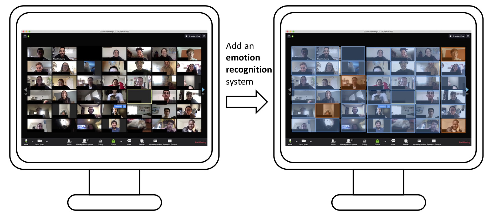

We talk with not just verbal languages, but also non-verbal ones: hand gestures, body poses, head motions, facial expressions. How rich is the information contained in these non-verbal channels? Is there a way to quantify it? Can we understand the meanings of them (gestures, poses, motions etc.) in the same way that we understand natural language, with the help of machine learning tools?
A simple assumption: if we can extract discrete patterns in non-verbal behaviors, for instance, poses, which is robostly observable across various communication scenarios, doesn't that mean these patterns can be considered as words? We examined the feature space of the body pose of a professor in his Zoom class, with the techniques of body pose estimation and pose embeddings. K-means clustering and t-SNE showed that there are very salient patterns in the professor's body poses.
This project is funded by NSF (CRII, award number 2105192, link)
Checkout the project site for more details. Dataset collected in this project: Life-Lessons.
Papers published:
The use of in-vivo microvascular capillaroscopy has evolved into an accepted method of describing the intravascular milieu from both hemorheological and microangiopathic perspectives. Disorders such as stroke and various forms of coagulopathy such as that related to COVID-19 are strongly correlated with abnormal hemorheological metrics. Historically, in-vivo assessment of erythrocyte passage within the microvascular lumen has been conducted by iterations of a space-time analysis in which erythrocyte location is transformed on a coordinate system then interpreted by evaluation of instantaneous velocity of a single erythrocyte temporally. The resultant output can be represented visually by a series of sloped lines indicating factors such as overall velocity, tube hematocrit and flux. While metrics such as erythrocyte velocity and flux provide important hemorheological measures of cardiovascular hemodynamics, the space time analytic approach negates assessment of an important corollary to erythrocyte velocity, namely erythrocytic aggregate metrics and assessment of flow field homogeneity.
We utilized optical and manual techniques as well as a technique which we term transversal temporal cross-correlation (TTC) to observe and measure both erythrocyte velocity and aggregation.
We demonstrated that the optical flow and TTC analyses can be used to estimate erythrocyte velocity and aggregation both in ex-vivo microfluidics laboratory experiments as well as in-vivo recordings.
Papers published:
The world is in great demand of convenient technology to support large scale online learning and conferences, especially under the impact of COVID-19.
However, there is still large space for improvement in the current remote conference technology. The biggest challenge is information overload – there is too many faces shown in one screen that the instructor cannot easily recognize those who need help or special attention. Secondly, many critical details, such as micro expression, intonation, are not easily captured, which sometimes leaves the actual intention of students not conveyed.
The state-of-the-art artificial intelligence (A.I.) technology is capable of capturing the subjectivity in human activities. We propose to develop an AI-based system that helps the instructor obtain a better awareness of the overall communication situation, so as to create a more inclusive/engaging learning experience.
This project is funded by San Diego State University Big Ideas initiative, 2021. The project demonstration is covered here: SmartInteract: Artificial Intelligence for Online Teaching Feedback